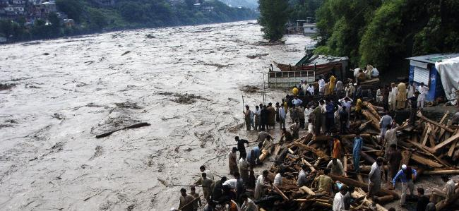
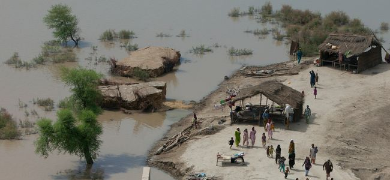

{% extends 'index.html' %}
{% load i18n %}
{% load maps_tags %}
{% load layers_tags %}
{% load pagination_tags %}
{% load staticfiles %}
{% load url from future %}
{% comment %}
This is where you can override the hero area block. You can simply modify the content below or replace it wholesale to meet your own needs.
{% endcomment %}
{% block hero %}


Pakistan Disaster Info is a nationally owned, open source data platform that aims to enable the mandated agencies to share their geospatial datasets and maps on hazards and exposure. In order to ensure that risk information is widely accessible to all decision makers, this platform will also host newly developed datasets, hazard and risk information
For more information about the National Disaster Management Authority,
visit our website